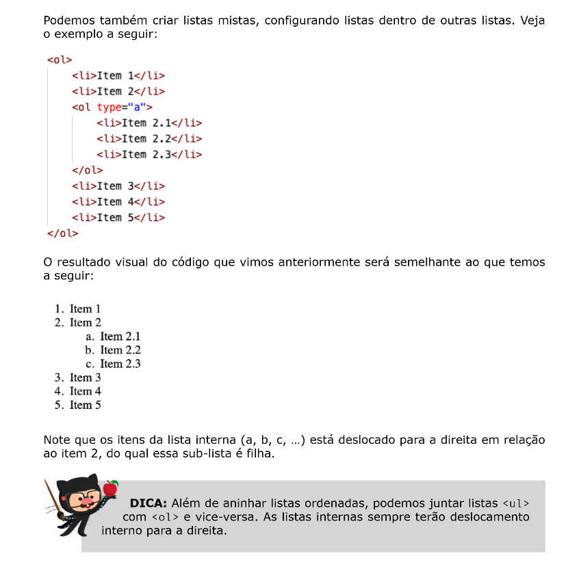

Para criar uma lista ordenada, ou seja, onde a ordem tem importância, utiliza-se a tag <ol> para delimitar onde começa e onde termina a lista, e a tag <li> para identificar os itens da lista.
Exemplo de lista:
Para mudar a forma como a lista é numerada, utiliza-se o parâmetro type, seguido por um destes valores:
1 - Formato padrão de 1, 2, 3...
A - Forma alfabetica maiúscula. Ex.: A, B, C, D...
a - Forma alfabetica minúscula. Ex.: a, b, c, d...
I - Numeral romano em maiúsculo.
i - Numeral romano em minúsculo.
<ol type="1">
<li>Item 1</li>
<li>Item 2</li>
<li>Item 3</li>
</ol>
<ol type="a">
<li>Item 1</li>
<li>Item 2</li>
<li>Item 3</li>
</ol>
A lista não ordenada utiliza-se de marcadores para exibir os itens listados. Para criar uma lista não ordenada, utiliza-se a tag <ul>, e para os itens usa-se a tag <li>.
Exemplo de lista de marcadores:
Da mesma forma como nas listas ordenadas, também podemos utilizar o parâmetro type para mudar o formato dos marcadores, conforme a lista abaixo:
Lembre-se!
É importante lembrar que estes parâmetros são soluções temporárias. A forma correta de definir estilos é utilizando as CSS.
A lista de definições é como se fosse um dicionário. Ela trabalha com termo e descrição:
Para criar uma lista de termos utilizamos a tag <dl>, e para cada item (termo) utilizamos a tag <dt> e para suas descrições utilizamos a tag <dd>.
Exemplificando:
<dl>
<dt>HTML</dt>
<dd>HyperText Markup Language: utilizada para criação de sites.</dd>
</dl>
A descrição do termo é automaticamente alinhada à direita do termo.
É possível utilizar tipos de listas diferentes dentro de outra lista, ou seja, podemos começar uma lista ordenada, e no meio criar subitens em uma lista não ordenada.
Confira a imagem abaixo:
